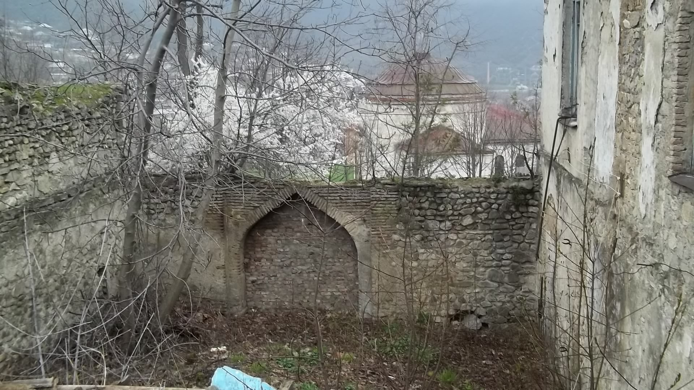
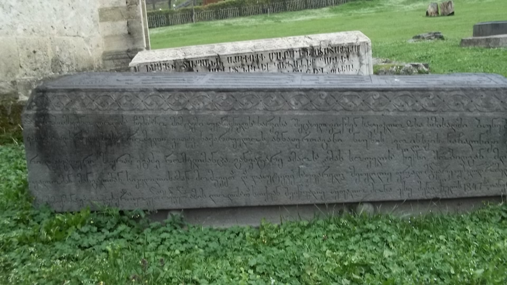
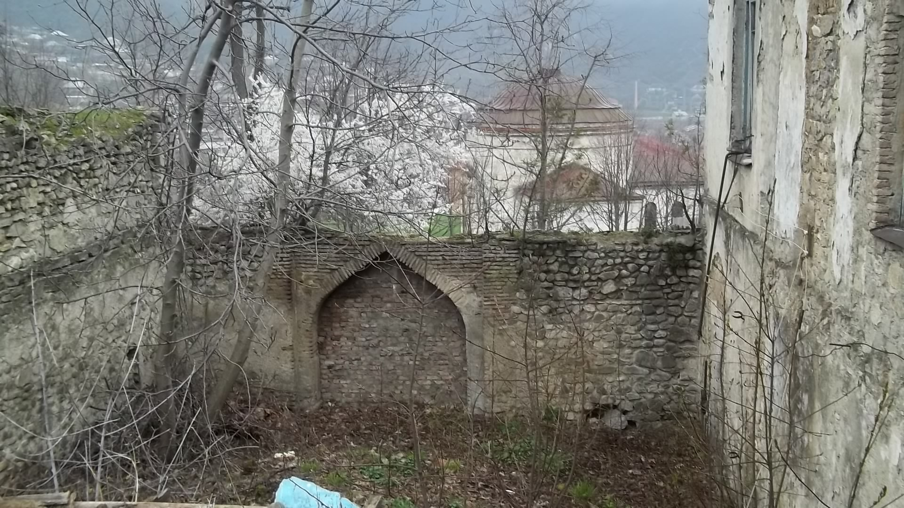
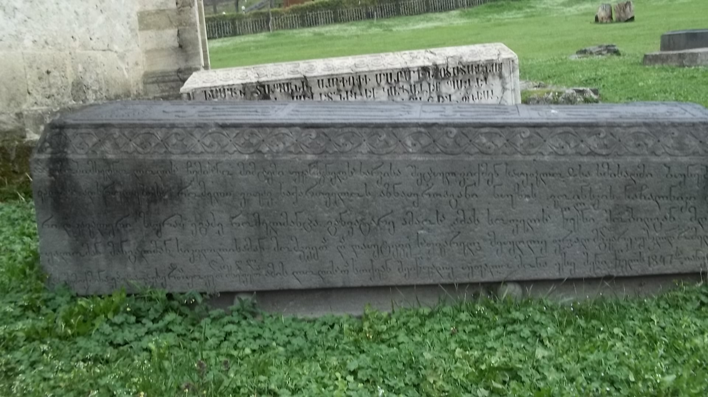
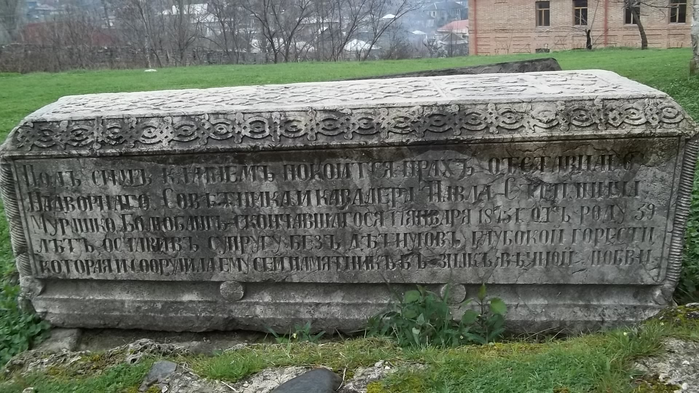
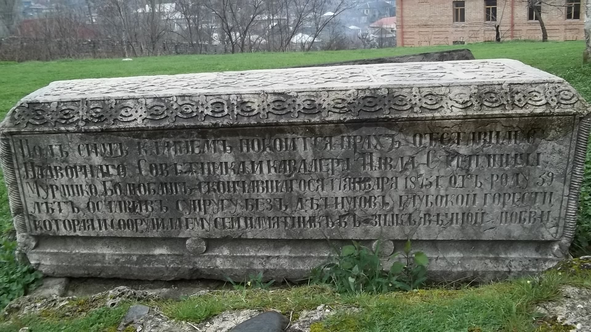

Dairəvi məbəd
 




 

Dairəvi məbəd, Nuxa Üçmüqəddəs kilsəsi və ya Nuxa Müqəddəs kilsəsi — Şəki şəhərindəki Nuxa qalasında yerləşən ölkə əhəmiyyətli memarlıq abidəsi. Hazırda bu tikilinin içində Şəki Xalq Tətbiqi Sənət Muzeyi yerləşir.
Haqqında
Dairəvi məbədin əsas hisəsinin (artırmalarsız) üstü günbəzlə tamamlanır və bu ilkin hissə memarlıq üslubuna, tikintisində istifadə edilmiş inşaat materiallarının növünə görə qaladakı digər tikililərdən xeyli fərqlənir. Həmin səbəbdən də bəzi tədqiqatçılar onun tarixini Qafqaz Albaniyası dövrünə aid edirlər. Lakin XX əsrin ortalarında mütəxəssislər Nuxa qalası ərazisinə baxış keçirərkən bu qənaətə gəlmişlər ki, 6 ha ərazini əhatə edən qalanın içində məscid və Şəki xan sarayı istisna olmaqla, bütün tikililər rus dövrünə aiddir. Dairəvi məbəd XIX əsrin ən geci 1853-cü ildən XX əsrin əvvəllərinə qədər indiki Şəki şəhərində fəaliyyət göstərmiş yeganə pravoslav kilsəsi idi. Kilsə binası təmiz yonulmuş əhəngdaşı ilə əvvəl dairəvi planda tikilmiş və üstü günbəzlə tamamlanmışdı. Sonralar isə ona üç tərəfdən çay daşı və kərpic hörgüsü ilə əlavələr edilərək genişləndirilmiş və o xaç formasına (yuxarıdan baxdıqda) salınmışdır. Bu iş 1853-cü ilə qədər baş vermişdir. Belə ki, Nuxa qalasının 1853-cü il planında artlq kilsə binası xaç şəklinə salınmış əlavələri ilə birlikdə göstərilir. Məlum olduğu kimi Nuxa qalasının divarları elə tikilmişdir ki, yuxarıdan baxdıqda adı ərəb əlifbası ilə "Məhəmməd… (xan)" kimi oxunur. Deyilənə görə bu oxunuşda kilsə binası ilkin dairəvi görkəmi ilə "Nun" hərfinin nöqtəsi imiş. Kilsənin ilkin dairəvi hissəsi memarlıq üslubuna və tikintisində istifadə edilmiş inşaat materiallarının növünə görə qaladakı digər tikililərdən xeyli fərqlənir. Ya ruslar bunu 1819-cu ildən sonra dairəvi formada kilsə kimi tikmiş və bir müddət sonra, 1853-cü ilə qədər onu daha da genişləndirərək xaç şəklinə salmışlar? Ya da bu tikili 1819-cu ilə qədər Nuxa qalasında mövcud olmuşdur, ruslar 1853-cü ilə qədər onu xaç formasına salaraq pravoslav kilsəsinə çevirmişlər? Nuxa qalasının 1819-cu il təsvirində kilsə haqqında heç bir qeyd yoxdur. Lakin təsvirdə Nuxa qalasındakı bir çox tikililərin özləri və koordinatları barədə məlumat verildikdən sonra, həm də qeyd edilir ki, "qaladakı Şəkinin rəhbərlərinə aid olmuş digər tikililər əsgərlər və xoylular tərəfindən tutulmuşdur". Bu qeyddən isə məlum olur ki, həmin vaxt qalada mövcud olmuş tikililərin bəziləri təsvirdə göstərilməyə də bilər və bu səbəbdən də, kilsənin 1819-cu ildə Nuxa qalasında mövcud olub-olmamasını Təsvir əsasında dəqiqləşdirmək mümkün deyil. Hal-hazırda keçmiş pravoslav məbədi "Dairəvi məbəd" adı ilə dövlət qeydiyyatındadır və ölkə əhəmiyyətli memarlıq abidəsi statusuna malikdir. Keçmiş kilsə binasının içində isə Şəki Xalq Tətbiqi Sənət Muzeyi yerləşir.
Adı
Kilsənin adı 1861-ci ilə aid mənbədə "Nuxa Üçmüqəddəs kilsəsi" (rus. Нухинская трехсвятительская церковь) kimi, 1905-ci ilə aid digər bir mənbədə isə "Nuxa Müqəddəs kilsəsi" kimi qeyd edilmişdir.
Aid olduğu yeparxiya
Məbəd 1905-ci ildə Gürcüstan yeparxiyasına aid olmuşdur.
Keşişləri və digər kilsə xidmətçiləri haqqında
1853-cü ilə aid mənbədə kilsədə Yevstafiy ata, 1861-ci il mənbəsində də Yevstafiy Xuçiyev adlı şəxsin keşiş olması qeyd edilir. 1894–1896-cı illərdə kilsədə zəbur oxuyanın adı Qavriil Peçenski olaraq qeyd edilmişdir. 1905-ci il mənbəsində burada David Utiyev(David Utiyev 1875-ci ildə ingiloy kilsəsinin keşişi idi və Tasmalı kənd əhalisinin xristianlaşdırılmasına çalışmışdı) adlı şəxsin keşiş olması qeyd edilmişdir. David Utiyevin qəbri isə kilsənin cənub-qərb tərəfindədir. XX əsrin ortalarında mütəxəssislər Nuxa qalası ərazisinə baxış keçirərkən bu qənaətə gəlmişlər ki, 6 ha ərazini əhatə edən qalanın içində məscid və Şəki xan sarayı istisna olmaqla, bütün tikililər rus dövrünə aiddir, baxmayaraq ki, 1853-cü ildən indiyə qədər qalada heç bir məscid yoxdur. Görünür, burada daha köhnə hesab edilmiş məscid deyildikdə Üçmüqəddəs kilsəsi nəzərdə tutulmuşdur. Səbəb isə bu ola bilər ki, məşhur rus səyyahı Seqalın və öz dövrünün görkəmli maarifçilərindən biri olan Rəşid bəy Əfəndiyevin, müvafiq olaraq, 1902-ci ildə və 1925-ci ildə çap olunmuş kitablarında iddia edilmişdir ki, ruslar 1828-ci ildə xanın ev məscidini pravoslav kilsəsinə çevirmişlər. Həqiqətən, Nuxa qalasının 1819-cu ildə tərtib edilmiş təsvirində Məhəmmədhəsən xanın evindən aşağıda, evə giriş qapısının solunda xanın şəxsi ibadətxanasının olması göstərilir. Amma 2X2 m ölçülü həmin kiçik kilsə, Məhəmmədhəsən xanın evinin içində olmuşdur və XX əsrin 90-cı illərinə qədər orada kiçik bir kilsə vardı. Üçmüqəddəs kilsəsi isə həmin kilsənin yerindən azı 50 metr cənubdadır. Rusiya İmperiyası dövründə Nuxada vəfat etmiş bir-neçə yüksək çinli rus məmurunun qəbri hal-hazırda kilsənin şərq tərəfindəki torpaq sahəsindədir. Mümkündür ki, həmin ərazi ruslara məxsus qəbristanlıq olmuş və orada daha çox sayda rus məmuru, rus hərbi qulluqçusu dəfn edilmişdir.